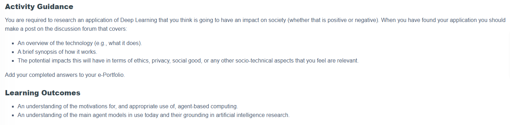
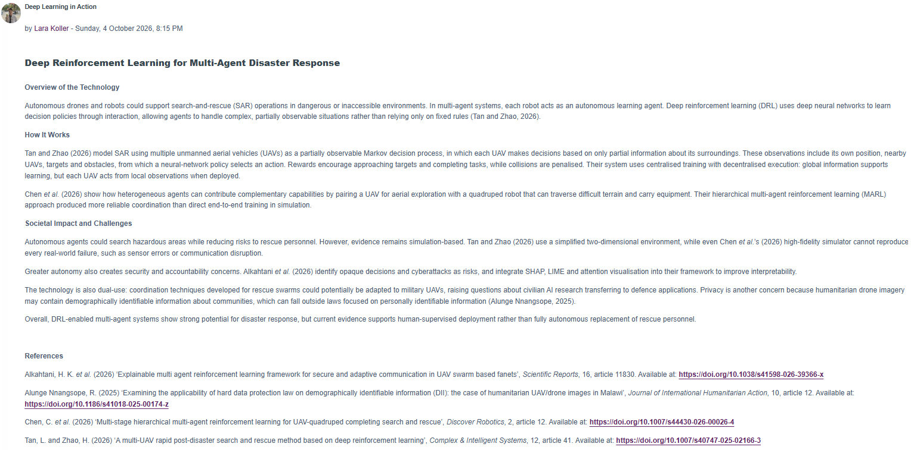

Activity Task

Completed Activity

Reflection
WHAT
I researched how multi-agent search-and-rescue robots use deep reinforcement learning (DRL) to coordinate.
SO WHAT
Framing search and rescue as a partially observable Markov decision process showed me how DRL agents learn coordinated policies from rewards rather than fixed rules, while acting on local observations (Tan and Zhao, 2026). Because the technical evidence was largely simulation-based, I recognised that performance alone cannot justify deployment; explainability, security, privacy and dual-use risks also matter.
NOW WHAT
My research planning agent already constrains autonomy through human review gates; in future designs, I will also define measurable evaluation criteria beyond task success.
References
Tan, L. and Zhao, H. (2026) ‘A multi-UAV rapid post-disaster search and rescue method based on deep reinforcement learning’, Complex & Intelligent Systems, 12, article 41. Available at: https://doi.org/10.1007/s40747-025-02166-3